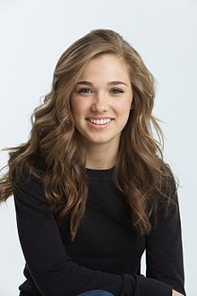
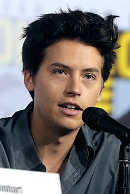
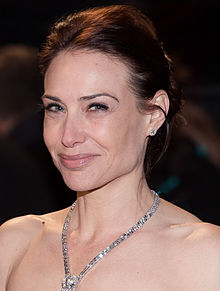

Five Feet Apartis a 2019 American romantic drama film directed by Justin Baldoni (in his directorial debut)[5] and written by Mikki Daughtry and Tobias Iaconis. The film was inspired by Claire Wineland, who suffered from cystic fibrosis.[6] Haley Lu Richardson and Cole Sprouse play two young patients with cystic fibrosis, who try to have a relationship despite always being forced to stay a certain distance (6 ft) away from each other. It was released in the United States on March 15, 2019 by CBS Films via Lionsgate.[1] The film received mixed reviews from critics and has grossed over $91 million worldwide.
|  |  |  |
|---|---|---|
| Haley Lu Richardson | Cole Sprouse | Claire Forlami |